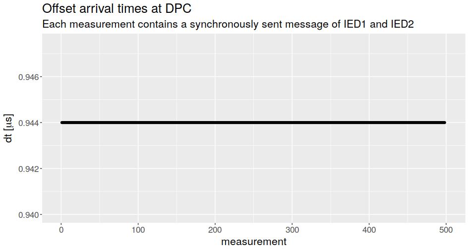

The Performance of Time-sensitive Networking in Power Grid Protection applications
Use case: Differential protection
DP Simulation model
Max. queue size

Arrival offset
System robustness
What influence has TSN on the overall system robustness?
Subsystem Interdependencies
Interdependencies in the DP application
- ICT failures may affect EPS operation
- EPS failures may harm ICT equipment